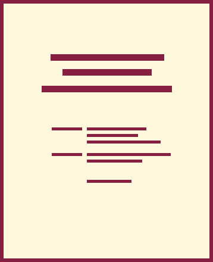

Goals
- Use conventions of various workplace genres, such as proposals, instructions, correspondence, reports, and slide decks, with understanding of how the genre conventions can be used as heuristics and as principles of arrangement. [CLO 4]
- Apply principles of effective visual design for print and electronic presentation, including hierarchical, chronological, and spatial arrangements. [CLO 6]
- Identify and apply the principles of effective style in the composing of usable, reader-centered written communications. [CLO 7]
The Task
What I Want You to Do
Create the title page for your Recommendation Report, following the examples and details from the textbook.
Why I Want You to Do It
Your title page is one of the first things someone will see when they look at your report. It is also an easy piece of your report to write. The hardest part is writing a strong title. I want you to check off a part of your report right away, so write your title page and check it off your to-do list!
Where You Can Find Help
- From Markel & Selber, Chapter 18:
- The details on a title page, from p. 481:
“A title page includes at least the title of the report, the name of the writer, and the date of submission. A more complex title page might also include a project number, a list of additional personnel who contributed to the report, and a distribution list.”
- Example title page, on p. 492 (part of the sample recommendation report in Figure 18.8).
- “Writing Clear, Informative Titles,” on pp. 193–194 (in Chapter 9)
- Effective Report Titles (page in Canvas)
- LinkedIn Learning video, “The importance of a clear title page” (3m 51s), from the Technical Writing: Reports course.
How You Do It
- Open the word processor document where you are working on your recommendation report.
- Scroll through the outline you created to the location for your title page.
- Follow the example on p. 492 of Markel and Selber to add the text for your title page.
- Format your title page similar to the example on p. 492 as well.
- Review the title you have written to make sure it follows the guidelines on the Effective Report Titles page and from the textbook (See above).
- Review the “Prepared for” information. Your report should be prepared for the specific person who can take action on your recommendation (e.g., some administrator on campus for a problem you are exploring on campus, some manager at a workplace, town council or a similar group in your local community). It is NOT prepared for me. I cannot make your recommendation happen.
- Copy the information from your title page and paste it into text box below. You do not have to worry about the formatting here, only in the finished report.
- Submit your work:
- Submit here by 11:59 PM on Friday, April 16.
- If you need more time, submit your document later. The assignment will close on Friday, April 30. Realize that I may not have time to provide extensive feedback on work submitted after Wednesday, April 21.
Obtaining the Points for Your Work
- Be sure to track your work in your Weekly Work Log.
- Traci will add the related points to Canvas when she marks your work Complete.
Why this change? To allow everyone a longer grace period. This system will still give you the points you earn, but it gives you longer to earn them.